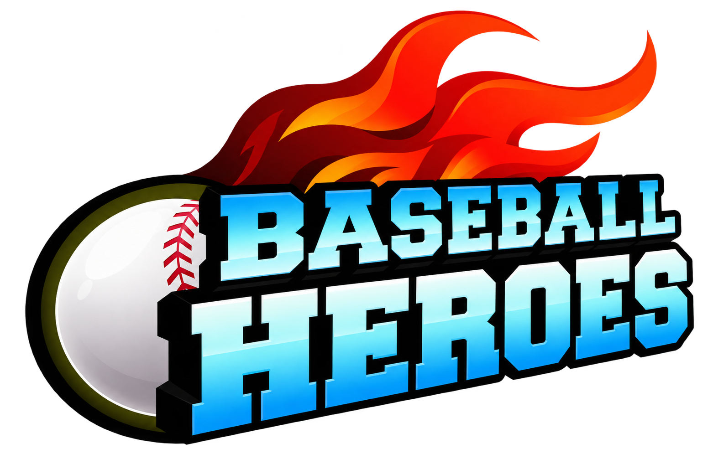

BASEBALL HEROES · 1.0.25 · 22 OCT 2026La entrada al partido sobre tu propio estadio
Publicada y comprobada por HTTPS. La entrada y el recorrido completo del calendario pasaron también en la web pública. Se retiraron las dos cuentas QA y se conservaron las cuentas anteriores.
Emblema ilustrado, tres aros en movimiento y un cierre breve con PLAY BALL. La entrada comparte el estadio, las mejoras y las decoraciones del partido. Su animación programada pasa de 5,29 a 2,3 segundos.
Abrir el juego · Notas y pruebas · Herramienta, prompt y referencia
Del estadio geométrico a la vista compartida del partido
Las dos capturas proceden de la misma carrera QA y configuración Rookie. La entrada anterior dibujaba otro campo, con gradas y nubes simples. La nueva usa MatchStadium, el mismo componente del juego.
 Antes · 1.0.24
Antes · 1.0.24 Después · 1.0.25 · WebMain real en Chrome
Después · 1.0.25 · WebMain real en ChromeLa referencia y la reconstrucción
 Original · video inicial 02:33Remake · sprite nuevo y aros animados
Original · video inicial 02:33Remake · sprite nuevo y aros animadosEl emblema es una reconstrucción generada, no un archivo original recuperado. Los aros, el ritmo y sus movimientos también se reconstruyen. No se promete una reproducción cuadro por cuadro.
También respeta un estadio modificado
La cuenta QA se configuró con Civic y dos decoraciones para esta comprobación; no se regalaron esos artículos a jugadores. Las ilustraciones, mejoras y objetos que se ven en la entrada proceden de esa configuración guardada.
 Civic con decoraciones
Civic con decoraciones Inicio automático del partido
Inicio automático del partidoEmblema integrado y transparencia

PNG creado con image_gen integrado y copiado sin editar al proyecto. Dos fragmentos de textura compartidos, con unos 6 MiB de píxeles. Los aros se dibujan una vez y durante la entrada solo cambian sus transformaciones. No se afirma una mejora general de FPS. Prompt completo y herramienta.
Se conservan modelo, servidor, web, audio, guardado v24 y cabeza de bateo 0.8.6. La descarga inicial de la página sigue siendo la misma. La prueba multijugador entre dos computadoras de amigos continúa pendiente.